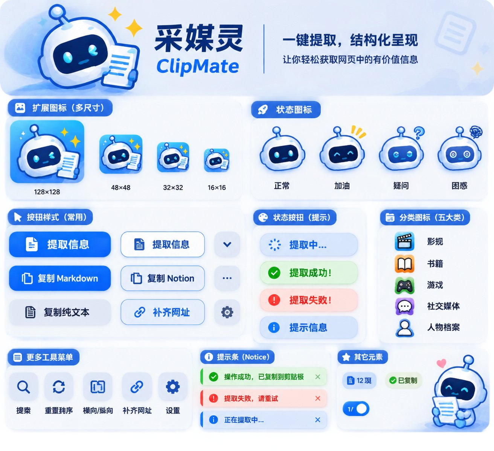

采媒灵 ClipMate · 设计系统
v1.0
2026.11
Chrome / Edge 扩展 · 23 个站点 · 30 余个字段
把网页，一张卡 。
采媒灵把任意页面拆成可用的字段——片名、导演、ISBN、作者、播放量——再按你选的格式交出来。这套系统只解决一件事：让它读起来像一张档案卡，而不是一台控制台。
23 接入站点
05 内容分类
03 输出格式
01 只吉祥物
工具类界面最常见的错误，是把「功能多」画成「东西多」。采媒灵的功能确实不少，但用户每次只做一件事：从一个页面拿走一份数据 。所以整套界面收敛成三种材料——纸、墨、一条发丝线——颜色只在必须指路时出现。
Room 01 / 单位
卡片是唯一单位
提取结果、站点设置、字段顺序、空状态，全部长成同一种卡：一条发丝线、一个字段标签、一个值 。学会一张卡，就学会了整个扩展。
Room 02 / 颜色
颜色只用来指路
蓝只出现在两处：要你动手的地方 ，和正在动的地方 。其余一律纸、墨、发丝线。当满屏都是蓝色按钮时，没有一个是重要的。
Room 03 / 语气
吉祥物负责卖萌
机器人管亲和，排版管专业，两者不互相妥协 ：不让插图去凑版式，也不让版式去迁就插图。整个界面只有它一个可以软。
主蓝 #056BF4 与青色 #1FB6FF 直接从吉祥物的按钮和眼睛上取色，不是挑来的；底色则从常见的冷白灰换成微暖的纸白 ，蓝因此显得更重、更干净，也更像印出来的东西。点色块可复制色值。
88% 纸与白 —— 底、卡、留白
9% 墨 —— 文字与发丝线
3% 蓝 —— 唯一的按钮与状态
<1% 粉与黄 —— 只给吉祥物和一处重点
paper
纸面
#F7F6F2
页面底色。比纯白暖 3%，长时间看不刺眼。
基准
surface
卡面
#FFFFFF
卡片、输入框、浮层。靠白与纸的差分层。
—
ink
墨
#111820
正文与标题。带一点蓝的深墨，不用纯黑。
16.5:1 AAA
ink-2
次级墨
#4C555E
说明文字、次要字段。仍可长读。
7.0:1 AAA
azure
信号蓝
#056BF4
主按钮、选中态、焦点圈。取自吉祥物按钮。
4.8:1 白字 AA
azure-ink
深蓝（文字用）
#0448A6
链接、蓝色文字。填充用上面的蓝，写字用这个。
7.8:1 AAA
wash
蓝晕
#EEF4FF
选中行、进行中的底色。只做面，不做字。
配 #0448A6 7.9:1
visor
面罩青
#1FB6FF
从吉祥物眼睛取的色。只用于「正在扫描」的光点。
装饰色 不作文字
ok
完成绿
#0E7A3E
提取成功、已复制。深一档才能承白色文字。
5.4:1 白字 AA
fail
失败红
#B42318
提取失败、校验不通过。偏砖红，不刺眼。
6.6:1 白字 AA
amber
星光黄
#F8C020
吉祥物身边的星芒。界面里不当颜色用。
插画专用
blush
腮红粉
#FF8FA3
一屏只许出现一次：封面重点，或成功的“嗒”一下。
点缀色 不作文字
唯一的硬规则： 蓝色文字一律用深蓝 #0448A6 ，亮蓝只做填充。亮蓝写在纸上只有 4.4:1，刚好卡在及格线下——这就是为什么界面里从不让它当正文颜色。
只用两个字族：一个带点古怪细节的无衬线 Bricolage Grotesque 管标题与拉丁文，一个等宽 JetBrains Mono 管所有字段码、数字和代码；中文回落到系统黑体（苹方 / 微软雅黑 / HarmonyOS Sans）。等宽不是装饰——它是这套系统的口音：凡是「被采集下来的东西」，都用它写。
主字族 / Display
Aa 采媒灵
Bricolage Grotesque
等宽 / Mono
A0·ISBN
JetBrains Mono
中文 / CJK
结构化
系统黑体
40 / 0.98 / 800
把网页整理成卡
封面大字
30 / 1.06 / 700
章节标题
页签、区块首屏
22 / 1.2 / 700
卡片主标题
作品名、站点名
17 / 1.35 / 600
分组小标题
「提取」「复制」分组
15 / 1.75 / 400
正文。这一行用来检查行距是否够松：中文正文在 15px 时需要 1.75 倍行高，否则密集的汉字会糊成一片。
正文、说明
13 / 1.6 / 400
辅助文字，比正文暗一档
字段值、脚注
11 / 1.4 / 500
field code · 字段标签
字段码、版本号
行宽： 中文段落不超过 34 个汉字（约 60 字符），超过就在 34 字处断开或在卡片里截断。这是本系统里最容易被忽略、但最影响「像不像专业产品」的一条。
04
版式
Layout
12 栏 · 8px 基准
所有间距都是 4 的倍数，主要落点只有 8 / 16 / 24 / 32 / 48 五个值。卡片不靠阴影分层 ——靠发丝线与纸白差；阴影只留给真正浮起来的浮层（popup、下拉、toast）。滚动时页面像一张被翻动的档案表，而不是一堆飘着的白盒子。
12 栏 · 沟槽 24px · 最大宽 1180px 内容列 720px ≈ 34 汉字
间距阶梯 SPACING
4 图标与文字之间
8 标签与值之间
16 卡片内边距
24 字段行高、栅格沟槽
32 卡片之间
48 区块之间
72 一级分组之间
圆角 RADIUS
输入框与按钮 12，卡片 18，浮层 28。吉祥物本身是圆的，界面不能再比它更圆。
本系统的做法：靠线
1px 发丝线 + 纸白差，信息层次一样清楚，但页面不会变成一堆塑料卡片。
豆瓣读书 · 已提取 12 字段
只在这种情况下用影
元素真的离开了页面——popup、下拉、toast。影子是「层次」的信号，不是装饰。
浮窗 · 正在加载 浮层
按钮高度统一 40px，圆角 12px，图标 15px 且永远在文字左边。一个屏幕上只允许一个实心蓝按钮 ——它就是这一屏的「下一步」。其余全是描边或纯文字。
按钮 BUTTON / 5 种
取消
清空缓存
已禁用
状态 STATUS / 4 态
✓ 提取成功
! 提取失败
提示信息
四态都带底晕，不用纯色块 —— 纯色块会把整行压成一道横幅，而状态只是行内的一点提示。措辞用主语的口气：提取成功 ，不是「操作已完成」。
提示条 NOTICE / 3 类
已复制到剪贴板 Markdown · 12 个字段 ×
这个页面没有识别出可用的字段 换到条目详情页再试一次 ×
正在提取… 约 2 秒 ×
出错时不道歉、不模糊，直接说下一步：「换到条目详情页再试一次」 。
开关与标记 TOGGLE · CHIP · BADGE
12 项字段
✓ 已复制
提取卡 FIELD CARD / 核心组件
整个产品的原型就是这一张卡：左边是乱糟糟的页面，右边是排好的字段。标签用等宽小字，值是正文；一眼扫下去，长度对齐、颜色克制，读起来像一张借书卡。
小王子
原始页面
结构化
book.douban.com/subject/1084336
标题 小王子
作者 [法] 圣埃克苏佩里 / 马振骋 · 3 人
出版社 人民文学出版社
出版年 2003-8
页数 97
ISBN 9787020042494
评分 9.1 · 1,284,392 人评价
简介 小王子住在一颗只比他大一点的小行星上……628 字
内容简介 ……………………………………
小王子 （Le Petit Prince）是法国作家
圣埃克苏佩里于 1942 年写成的儿童文学
短篇小说。本书的主人公是来自外星球的小
王子。书中以一位飞行员作为故事叙述者，
讲述了小王子 从自己星球出发前往地球
的过程中所经历的各种历险。作者以小王
子孩子式的眼光，透视出成人的空虚、盲
目和愚妄，用浅显天真的语言写出了人类
的孤独寂寞……（展开全部）
作者简介 ……………………………………
安托万·德·圣埃克苏佩里，法国飞行员、
作家。1900 年生于里昂……
空状态与浮窗 EMPTY · POPUP · v2.9.1
已落地（v2.9.1） ：popup 在不支持的网站与浏览器内部页会摆出左边这套空状态——吉祥物 104px、一句标题、一句解释、一个「查看支持的站点」 出口（落到设置页 #sites ）。设置行与底部状态一起收起，不留能点但没用的开关 。纸色也接进代码了 ：popup、浮窗、提示条统一换成本文档定义的那套纸色（底 #F7F6F2 / 次级面 #F1EFE8 / 发丝线 #E1DCD1 / 正文字 #111820 ），深色另有暖黑一套。#f5f5f5 / #6d5ce7 这些旧灰蓝旧紫已全部清掉，契约测试会盯着它们不许回来。
这个页面还没有可提取的内容
打开条目详情页，采媒灵会自动认出它属于哪一类。
查看支持的站点
自动提取
等待加载 3 秒
自动复制
复制格式 Notion
显示提取按钮
06
吉祥物
Mascot
插画母版 · 状态角标 · 应用图标
它是这套系统里唯一允许「软」的东西。形象是一幅插画 ：圆头机器人举着一份文档——「采集」这个动作本身就在画面里，所以它不能被裁成只剩一张脸。v2.8.6 定稿后只有这一张形象 、一套素材，四个状态不再各画一张表情，改由下方的状态角标 表达。这条取舍的理由很实在：表情需要四张同姿势的图才能严丝合缝地互换，而「举着文件」的姿态一旦改动就成套不成立；角标只加一枚 18px 的圆点，不碰形象，成本低且永不脱节。
完整形象
母版，用于空状态、介绍页
FULL
按钮版
同一张图，抠透明底后随按钮出现
BUTTON
结果角标
成功 ✓ / 失败 !
SUCCESS · ERROR
疑问角标
等待确认、需要选择
ASK
180 96 48
母版：icons/mascot/mascot.png （480×409，透明底）。48px ：再小就认不出纸和手，只剩一团蓝白。
应用图标 APP ICON · 16 / 32 / 48 / 128 · v2.9.0
128 × 128商店 / 详情页
48 × 48扩展管理页
32 × 32工具栏 2x
16 × 16工具栏
构成 ：主蓝圆角方底（#3D8BFF → #1668E6 ）+ 吉祥物本体。天线是识别点，任何尺寸都不删。唯一素材 ：icons/mascot/mascot.png 直接合成，不再另画矢量版——图标里的机器人就是按钮上那个。两套裁切 ：48/128 用完整构图（头 + 手里那张纸，占宽 94%）；16/32 改「头部方裁」（占宽 98%）——16px 下那张纸只会糊成一坨灰斑，裁到脸才能认出眼睛。安全区 ：四角圆角 30/128，不做投影、不加描边。生成 ：python scripts/make-icons.py （--preview 出工具栏模拟图），母版换图后重跑即可。
深色工具栏
16 / 32 / 48 在深色底上仍可辨
按钮里的吉祥物 PAGE BUTTON · v2.8.6
页面右上角那颗提取按钮，左侧轮廓就是吉祥物本体 ：头像 80px、透明底、比 48px 的按钮高出上下各 10px，把左端的圆角整片盖住。它不垫白色圆底——白圆会让头像像贴纸，把头像直接放到蓝底上，靠深蓝描边（#0B3C8F ）自己立轮廓。状态不靠换表情 ，而是在文字右侧挂一枚 18px 的白圆角标：成功 ✓、失败 !、疑问 ?。白圆在绿/红/蓝三种底上都最高对比，符号再用语义色点明情绪；用形状编码而不只靠颜色，色觉差异的用户同样分得清。
提取
提取中
完成
重试
提取
深色页
提取
完成
蓝底 + 白机身 + 深蓝描边，三种底色都不需要额外的衬底
✓ 这样做
头像用 80px、margin-left:-18px ，让头压住按钮左边界
按钮左端用 8px 直边，右端 26px 圆角，左直边被头像整片盖住
用 background-image 承载（不用 <img> ），站点对 img 的全局样式碰不到它
状态只加角标，不动形象——换状态时按钮几何必须完全不变
角标符号用 ::after 生成，按钮的 textContent 保持「完成」两个字
✕ 不要这样
给头像垫白色圆底或任何衬底，那会把它变回一枚贴纸
给按钮加 overflow:hidden ，会把溢出上下沿的头切一刀
把头缩回按钮内（≤48px），左端又会露出蓝色圆弧和豁口
用四张表情图来表达状态——姿势必须完全一致才对得上，成本高且一旦重画就成套不成立
角标贴在按钮右下角：右端 26px 圆角会把圆切掉一块，看着永远像歪的
✓ 这样做
直接用 icons/mascot/mascot.png 母版，保持配色与比例
让它单独站一处留白，旁边不放第二个视觉重点
空状态与成功反馈，用它替代一句干巴巴的提示
透明背景直接叠在纸面或蓝底上，不加衬底
✕ 不要这样
改色、追加描边、加滤镜、旋转或镜像
裁掉天线或手里的文档——那是「采集」的语义
缩到 48px 以下贴在文字前当小图标（按钮里请用 80px 成套规范；逐帖小按钮是唯一例外 ，28px，见下方）
同一屏出现两枚角标（两个结论会互相抵消）
逐帖小按钮 FEED BUTTON · v2.8.9
Instagram、X、微博的每条帖子上挂一颗 28px 的小按钮。它是全套系统里唯一不带底盘 的按钮：吉祥物直接站在页面的白底、深底或灰底上，靠母版自带的深蓝描边立轮廓——28px 的方块底下再垫一块颜色，就会退化成「应用图标」。图放在 background-image 里，按母版比例缩到 30×25.6px （28px 容器左右各裁掉 1px 透明留白，画面无损），换算出头约 20px ，刚好认得出脸和手里那张纸。状态用背光 表达：成功时整个人后面亮一块浅绿，失败时浅红，绝不铺实心色 ——实心色会把白机身整个吞掉。
白底页
待命
悬停
成功
失败
深底页
待命
悬停
失败
白机身 + 深蓝描边，在白底与深底上都不需要衬底
✓ 这样做
容器 28px 正方形，图 30×25.6 （按母版 480:409，头 ≈20px）
用 background-image 承载，并在 manifest 登记 web_accessible_resources
状态只改 background-color ，形象与几何完全不动
背光用 rgba(…,.20) 这一档透明度——浅到能看出底色，深到能看出「亮了」
位置按当前行的锚点现量 ：站在「⋯ / ⌄」左边 6px 、与它垂直居中；同一行还有「关注」这类按钮时继续往左让（IG 的「关注」、微博的「⌄」都靠这条避开）位置每轮扫描重算一次 （头部控件常常后加载），算出没变就不写样式，避免白白触发重排
✕ 不要这样
给 28px 的按钮垫白色或灰色底盘——会变回一枚应用图标
状态用 .95 这种实心绿/红——白机身直接消失
用 <img> 放图：站点的 max-width / object-fit 会把头像改烂
忘记登记 web_accessible_resources ——页面上是一片空白，jsdom 还测不出来
位置写死一个 right 就完事：IG 头部那颗「关注」会被整颗压住（真机重叠 26px ），微博那颗「⌄」会被压得只剩一道边

原始设计板 原初参照。v2.8.6 定稿后正式母版改为重绘工具产出的透明 PNG：造型与原稿一致，边缘干净、无白底。
整套 token 只有这些，换成 CSS 变量后，浅色与深色主题共用一套组件。深色主题不是把颜色调暗，而是把纸换成墨、把墨换成纸。
/* ClipMate design tokens · v1.0 */
:root {
/* 纸与墨 */
--paper : #F7F6F2 ;
--surface : #FFFFFF ;
--surface-2 : #F1EFE8 ;
--ink : #111820 ;
--ink-2 : #4C555E ;
--ink-3 : #6B7278 ;
--line : #E1DCD1 ;
/* 指路色 */
--azure : #056BF4 ; /* 只做填充 */
--azure-ink : #0448A6 ; /* 只做文字 */
--azure-wash : #EEF4FF ;
--visor : #1FB6FF ;
--blush : #FF8FA3 ;
--ok : #0E7A3E ;
--bad : #B42318 ;
/* 度量 */
--r-btn : 12px ; --r-card : 18px ; --r-pop : 28px ;
--h-btn : 40px ; --gap : 8px ;
--font-ui : "Bricolage Grotesque","PingFang SC","Microsoft YaHei",system-ui,sans-serif ;
--font-mono : "JetBrains Mono",ui-monospace,Consolas,monospace ;
}
01 正文对比度 ≥ 4.5:1，大字 ≥ 3:1
02 焦点圈 2px 亮蓝 + 3px 偏移，不用 outline:none
03 开关用 role="switch" + aria-checked
04 状态不只靠颜色，配图标或文字
05 动效 ≤ 200ms，尊重 prefers-reduced-motion
06 中文字号不小于 13px，行高不低于 1.6